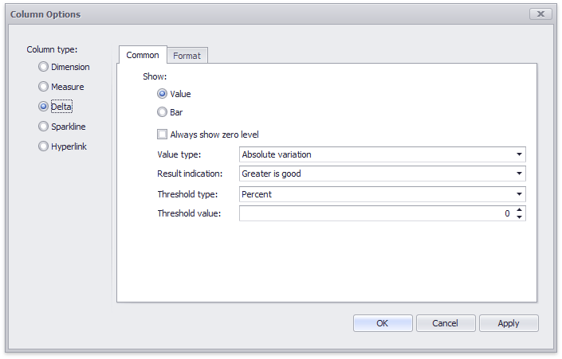

Delta Column
A delta column calculates summaries against two measures, and displays the difference between these summaries. This difference can be indicated with a numeric value displayed within the delta element and an additional delta indication.

Data Binding Specifics
Delta columns are bound to two measures that provide two values: the Actual value and the Target value. The difference between these values is displayed in the column.
When you switch the column type to Delta, the data item container is changed, to accept the Actual and Target measures.

Display Mode
Values in the delta column can be displayed as text, or represented by bars.

To select between these modes, invoke the Column Options window (see the Column Type Overview topic to learn how to do this) and select Value or Bar.

If bars are displayed, use the Always show zero level check box to specify whether the bar's minimum value is zero (checked) or an automatically selected value that ensures that the difference between bars is clearly displayed (unchecked).

Delta Values and Indication
If the display type is set to Value, the Column Options window displays options that allow you to configure delta values and indication.

You can specify which values should be displayed in the delta column. To do this, use the Value type combo box in the Column Options window.
| Actual value | Absolute variation | Percent variation | Percent of target |
|---|---|---|---|
 |
 |
 |
 |
To specify the condition for displaying delta indication, use the Result indication combo box in the Column Options window.
| Greater is good | Less is good | Warning if greater | Warning if less | No indication |
|---|---|---|---|---|
 |
|
 |
 |
 |
The Format tab allows you to specify the numeric display format for different value types, as described in the Formatting Data document.

The tab contains the following settings.
- Format type - Specifies format types for numeric values.
- Unit - Specifies the unit to convert the numeric values.
- Precision - Specifies the number of fractional digits to display.
- Currency - Specifies the currency symbol and format provided by the current culture settings.
- Culture - Specifies the name of a culture that defines the currency symbol and format.
- Include group separator - Specifies whether separators should be inserted between digit groups.
Comparison Tolerance
The comparison tolerance allows you to specify more advanced conditions for displaying delta indication. For instance, you can set a specific indication to be displayed when the actual value exceeds the target value by 10% or by $2K.
Use the Threshold type combo box to select whether you wish to specify the comparison tolerance in percentage values or in absolute values. Then use the Threshold value box to specify the comparison tolerance.